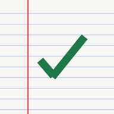
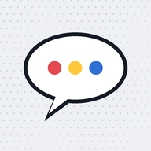

Учебный уголок
Тренажёры и игра для сына, план для родителей и студия комиксов. Всё работает прямо в браузере.
Тренировочная аренаДля сына: «Тренировка дня», счёт, чтение, слова, игры вместе

План для родителей6 недель, распорядок, диктанты, планшет, дневник открытий

Студия комиксовДля пера XP-PEN: рисовать и писать реплики
Оборона таблицыДля сына: защита крепости, где оружие — таблица умножения
Как пользоваться
- Откройте нужную страницу и добавьте её на главный экран: «Поделиться» → «На экран „Домой“» (iPad) или меню ⋮ → «Добавить на главный экран» (Android).
- После первого открытия страницы работают и без интернета.
- Всё, что вы отмечаете, хранится только в этом браузере на этом устройстве и никуда не отправляется. Прогресс сына смотрите на том же планшете, вкладка «Прогресс».
Чем отличается от версии на claude.ai
- Нет функций ИИ: историй, квестов, сценок и тем викторины от ИИ. Встроенные книга, сценки и вопросы есть.
- Прогресс не синхронизируется между устройствами.
- Альбом комиксов хранится в браузере; любимые комиксы лучше скачать картинкой.